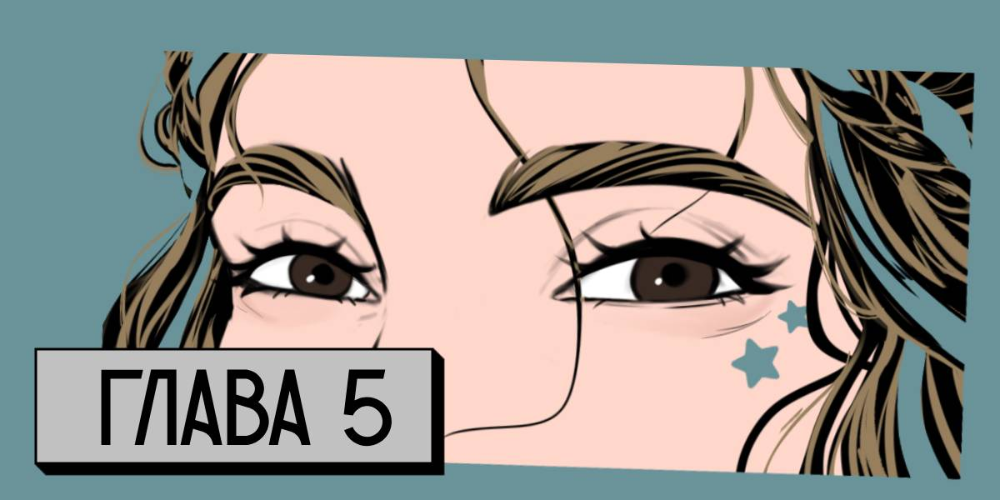

Интернет в ебенях, куда нас занесло, ловит с переменным успехом, но хотя бы есть. Получив смс-ку о скорой оплате тарифа, я заранее перекинула на счет деньги, чтобы не оказаться без связи совсем.
Последняя переписка с родственниками была еще утром, когда мы проехали мимо какого-то города и остановились на очередной заправке. Все они стали для меня какими-то одинаковыми. Как и люди, которых мы встречаем по пути.
— Ну и жопа мира. — бормочу я, рассматривая в окне дома деревни, куда мы заехали на ночевку.
— Ну ты же не хочешь спать в машине. — говорит Оля, выруливая машину так, чтобы поменьше качало на кочках.
— Кстати, — спрашивает Настя. — Ты не хочешь спать в машине почему?
— Потому что тут слишком тесно. — Отвечаю я, смотря в окно.
— А нам тут не тесно? — иронично спрашивает Настя. — Мы вообще не можем тут ноги вытянуть.
— Тогда тем более можно в доме переночевать, — бурчу я, уже понимая, что еще немного и мы начнем ссориться. — Да и хоть немного передохнуть хочется. У меня эта бесконечная дорога уже в печенке сидит.
— Непонятно, сколько мы вообще в дороге проведем — резонно замечает Оля.
Чисто из вредности мне не хочется с ней соглашаться, но я понимаю правдивость ее слов.
— Тогда тем более можно передохнуть, — продолжаю настаивать на своем я. — Вам самим не надоело спать в машине или на улице, где нас заедают комары? Не на мне одной скоро живого места от укусов не будет.
— Если выбирать между чужим домом и машиной, я выберу машину, — говорит Настя.
— Я тоже, — говорит Оля. — Но ради тебя мы сделаем исключение и найдем где переночевать в ближайшей деревне.
— Ну спасибо, — саркастично отвечаю я и отворачиваюсь к окну.
В деревню Мыслец мы решили заехать, чтобы не рисковать. Так бы спали где-то в лесу или там, где можно спрятать машину. Но деревня — лучший вариант, который получилось придумать. Настя с Олей наотрез отказались спать в чужом доме. Мне тоже эта идея не сильно нравилась, но я выбрала меньшее зло.
Мы проезжаем, судя по всему, по центральной улице вглубь деревни. И нам не встречается ни одного человека. Но двери единственного магазина не заперты, внутри горит свет.
— Узнаем в магазине, у кого тут можно остановиться? — я смотрю на дорогу, которую перебегает хромая собака. Она скалится и лает, пытается кинуться на колеса, но быстро отскакивает в сторону.
— Ты точно уверена? — Оля останавливает машину рядом с перекрестком. — Может, в машине, все же поспишь?
— Мы, вроде, все решили, — бормочу я. Хотя и понимаю, что девочки пошли на уступки, и мы тратим время на то, чтобы найти место на одну ночь.
Я выбираюсь из машины и тут же лезу в сумку, перекинутую через плечо, за сигаретами. Чем дальше мы от Москвы, тем гаже мне попадаются сигареты. Так и курить бросить недолго. Хотя, на такие подвиги я пока не готова.
Легкий сухой ветер подхватывает тонкую полоску дыма. Я затягиваюсь и прислушиваюсь. Где-то кудахчут куры, мычит корова и бормочет радио. Но никого не видно и местные, даже на заехавшую в деревню машину никак не реагируют. И это странно и чуточку стремно.
Докуриваю быстро, бросаю сигарету на землю и затаптываю ее ногой, на что ловлю недовольный взгляд Оли.
— Ну нет тут мусорки, — я поднимаю руки в защитном жесте. — Куплю пару киндеров и буду складывать окурки в пластик, а потом выкидывать. А то ты меня покусаешь скоро.
— Если все будут разбрасывать мусор, мы скоро в говне потонем, — Оля тоже выбирается из машины и потягивается.
Мне думается, что в большем говне мы еще не оказывались, но молчу. Обсуждать уровень всего происходящего пиздеца не хочется.
— Сбегаю за сигаретами, — я смотрю по сторонам. — Кому-то что-то надо?
Оля, все еще смотрит на меня осуждающе, но мотает головой. Настя вообще так и осталась сидеть в машине. Я пожимаю плечами и иду в сторону двери магазина. Не сильно на что-то надеюсь, но пополнять припасы хоть чем-то надо.
Я поднимаюсь по ступенькам и оборачиваюсь. Из магазина выходятдвое мужиков и одна девушка. На троих они передают друг другу двухлитровую бутылку пива и невнятно что-то обсуждают. На меня смотрят удивленно, рассматривают и по пьяным лицам становится ясно: до них дошло, что я не местная. Но их оборвавшийся разговор я все равно слушала.
Обрывки фраз, шепотки, якобы между собой, настороженные взгляды — все это почва для оценки и размышлений. Упомянули район или улицу, куда не стоит соваться? Я буду об этом помнить. Шепнули про место, где лучше всего ловит связь — учту, приму к сведению.
Я шагаю в магазин, осматриваю почти пустые полки. Бросаю взгляд в отражение стеклянных дверей, чтобы осмотреть чуть больше территории, на которую ступаю.
Подхожу к кассе, осматривая полупустые полки с сигаретами.
— Что осталось? — я киваю продавщице.
Возрастная тучная женщина с ярко накрашенными красными губами смотрит на меня осоловелым взглядом.
— Ну смотри, — она машет рукой на полки за своей спиной.
Ассортимент скудный, поставок сигарет почти нет. Поэтому местные уже растащили все более или менее приличное.
Выбор невелик, поэтому я беру две последние пачки ну хоть каких-то нормальных сигарет.
— Все? — спрашивает женщина. — Паспорт?
— Вы серьезно тут и сейчас спрашиваете документы? — я удивленно смотрю на кассиршу.
— Закон, знаешь ли, — кассирша вскидывает подбородок. — Уж больно молодо выглядишь.
Очень хочется поругаться на счет резкого перехода на "ты", но я, по старой памяти, понимаю, что в регионах — это норма. Никто не будет относиться к тебе уважительно, потому что местные все друг друга знают, а, даже если нет, свою модель поведения менять не намерены.
— Еще две клубничные, арбузные и ягодные, — я киваю на запыленные полки с электронными сигаретами.
Видимо, местные их не жалуют. Удивительно, что вообще такие завезли. А мне и к лучшему. Только срок годности проверить нужно.
— А паспорт? — кассирша щелкает пальцами по калькулятору и называет мне сумму. — И оплата только наличными.
— Чего? — я опешиваю. — Так вот же у вас терминал, — я указываю на прямоугольную серую коробочку старого образца. — В чем проблема принять оплату через него?
— Связь плохая, — кассирша пожимает плечами и оскаливается. — Так что или наличка, или никак.
— Да что б тебя, — бурчу я и достаю нужную сумму и пересчитываю.
Вот он, век цифровизации, когда бумажные деньги в руках держать так непривычно, что невольно накатывает волнение: а не проебусь ли я, отсчитав неправильную сумму, или невнимательно посчитаю сдачу.
Налички у меня осталось мало, а банкоматы нам встречаются редко. Следующий, судя по карте, будет слишком далеко.
— Вот, — я кладу деньги на истертую пластиковую подставку.
Кассирша довольно кивает и даже упаковывает мне все купленное в маленький пакет, отсчитывает сдачу и натянуто улыбается.
— Не подскажите, где тут можно переночевать? — задаю я тот вопрос, ради которого в первую очередь и пришла сюда. — Нам бы просто поесть, помыться и поспать. С утра уедем.
— Тут вам не гостиничный комплекс, — фыркает продавщица и пихает руки в карманы широкого фартука. — Хотя, у меня сосед Коля с семьей уехал, — она щурится и смотрит на меня с подозрением. — У меня есть ключи, можете переночевать в его доме.
— А ничего, что хозяев дома нет? — задаю я резонный вопрос. — Как-то это неправильно. Может, пустит кто переночевать?
— Да не ссы ты, — продавщица закатывает глаза. — Все ценное Колька с собой увез, а дом все равно пустой стоит. Так, прикрыт приличия ради. Все знают, что и брать у него там нечего было.
— Ну давайте ключи, — я пожимаю плечами, хотя вся эта ситуация кажется мне странной. — И куда ехать?
Продавщица наклоняется под прилавок, достает оттуда потрепанную кожаную сумку с облупившимися ручками и бурча себе что-то под нос, ищет.
— Вот, — продавщица кладет на прилавок связку ключей. — Последний дом на выезде справа. Зеленый такой, под окном старая береза.
— Спасибо, завтра вернем, — я беру ключи и уже начинаю думать, что вся эта затея с ночевкой — полная херня.
— Оставь под ковриком в магазин, — бормочет продавщица. — Не знаю, во сколько завтра откроюсь. Да и откроюсь ли вообще.
— А сегодня тут до которого часа будете? — я забираю пакет с сигаретами.
— Пару часов так точно, — продавщица смотрит на наручные часы и икает. — А что, купить что-то хотела?
— Да так, — я пожимаю плечами. — Может зайду попозже, а то сейчас времени нет.
— Ну ты заходи, я подожду, — продавщица снова щурится. — Ты только, это, до темноты давай. Как смеркаться начнет, я магазин сразу закрою и домой.